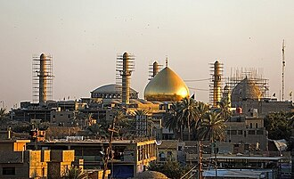

Gambaran
Le sanctuaire Al-Askari est un lieu saint du chiisme situé à Samarra en Irak. Les imams Ali al-Hadi et Hasan al-Askari y sont enterrés. C'est donc un mazar.
العَتبَةُ العَسكَريَّة تعرف رسميًا بـالعَتْبَةُ العَسْكَريَّةُ المُقَدَّسَة أو الرَّوْضَةُ العسكريّة الشَّريفة وتعرف أيضًا باسماء بديلة عديدة كـمَقام وضَريح ومَشهَد ومَرقَد وحَرَم الإمامين العسكريين وأحيانًا الجامع العسكري هي مجموعة من المباني التاريخية الدينية المترابطة بالإمامين العاشر والحادي عشر من الأئمة الاثنا عشر علي الهادي وابنه الحسن العسكري، تقع في مدينة سامراء على الضفة الشرقية لنهر دجلة في محافظة صلاح الدين. تضم المجموعة ضريحهما تحت القبة الذهبية، والجامع الكبير ومسجد المهدي المشهور بسرداب الغيبة وعدة أبواب تاريخية. تحيطها منطقة سكنية وتجارية وفنادق عديدة، حيث تعتبر قلب المدينة ومركزًا سياحيًا دينيًا في العراق يزورها المسلمين عمومًا وهي مقدسة لدى الاثني عشريين خاصةً.
The Al-Askari Shrine, also known as the 'Askariyya Shrine and the Al-Askari Mosque, is the mausoleums of the tenth and eleventh Shia Imams, Ali al-Hadi and Ḥasan al- Askari, located in Samarra, in the Saladin Governorate of Iraq. It is a holy site in Shia Islam.
El-Askerî Camii veya Askeriyye Camii/Türbesi, Irak'ın başkenti Bağdat'ın yakınlarında, 125 km güneyinde bulunan Samarra kentindeki bir türbe ve cami kompleksi olup Şiî Müslümanlar için dünyadaki kutsal ziyaretlerinin en önemlilerindendir. İbadethanenin yapımı 944 yılına tarihlenmektedir. Caminin altın kaplamalı kubbesi Sünni militanların 2006 yılının Şubat ayında düzenledikleri bombalı bir saldırı sonucu yıkılmış, iki minaresi ise 2007 yılının Haziran ayında yapılan bir diğer saldırıda tahrip edilmiştir. Bu iki eylem Şii Müslümanlar arasında büyük kargaşaya neden olmuştur. Yapının o zamana değin ayakta kalmış olan saat kulesi ise Temmuz 2007'de tahrip edilmiştir.
Masjid Al Askari adalah sebuah tempat suci Muslim Syi'ah yang terletak di kota Samarra di Irak. [[Masjid]تهتنن] ini adalah salah satu masjid Syiah yang paling suci di seluruh dunia, yang dibangun pada 944. Jenazah Imam Syi'ah yang ke-10 dan ke-11, Ali al-Hadi dan anak laki-lakinya Hasan al-Asykari diistirahatkan di masjid ini. Di situ juga terdapat tempat suci untuk Imam yang ke-12, yaitu Imam yang tersembunyi menurut kepercayaan Syi'ah, Imam Mahdi. Tempat ini juga dikenal sebagai tempat suci untuk Ali al-Hadi, atau al-Hadhrah al-Askariyah.
عراق کے شہر سامرا میں واقع ایک شیعہ مقدس مقام ہے۔ اس مزار کی تعمیر 944ء میں ہوئی اور اس مزار سے متصل ایک مسجد واقع ہے۔ اس مسجد کا نام العسکری مسجد ہے۔ اس مزار میں شیعوں کے 11 ویں اور دسویں امام مدفن ہیں۔
Der al-Askari-Schrein ist die Bezeichnung für einen Schrein und die ihn bergende Moschee in der irakischen Stadt Samarra, die 125 Kilometer nördlich von Bagdad liegt. Er ist auch als „Grab der zwei Imame“ oder „Goldene Moschee“ bekannt und gilt als eines der wichtigsten Heiligtümer der schiitischen Muslime.
La Mezquita Al-Askari o Santuario Al-Askari es uno de los sitios sagrados de la corriente chií del Islam. El santuario está ubicado en la ciudad de Samarra. Es una de las mezquitas más importantes del mundo, construida en el año 944. Los restos del décimo y del undécimo imanes chiíes, Alí al-Hadi y Hasan al-Askari, mejor conocidos como los dos Askaris, descansan en el lugar, junto al santuario del duodécimo imán, el imán oculto Muhámmad al-Mahdi. El santuario de Al-Askari también se conoce como la Tumba o el Mausoleo de los Imanes.
De Gouden Moskee of ook wel de al-Askari-schrijn is een sjiitisch schrijn in de Iraakse stad Samarra.
阿斯卡里清真寺或阿里·哈迪清真寺、金顶清真寺，全称为伊玛目阿里·哈迪与哈桑·阿斯卡里圣陵，地处于距伊拉克首都巴格達125 公里外的萨迈拉，是一处伊斯兰教什叶派聖地。它於公元944年年修造，是什叶派最重要的清真寺之一。其著名的金顶及两座宣礼塔先后在2006年2月及2007年6月的袭击中被毁。
अल असकरी या असकरिय्या मज़ार/मस्जिद एक शिया मुस्लिम धर्मात्मा मस्जिद है जो बग़दाद से 125 कीमी दूर इराक़ी शहर सामर्रा में है। यह एक विश्व के सबसे महत्वपूर्ण शिया मस्जिद है, जिसका निर्माण सन् 944 ई में हुआ। इसका एक गुम्बज़ 2006 में एक बम विस्फ़ोट में नष्ट हो गया और इसकी दो शेष मीनारें जून 2007 में एक अन्य बम विस्फ़ोट में नष्ट हुई, जिस से शिया मुसलमानों में व्यापक अप्रसन्नता हुई।
Мечеть Аскария, или Золотая мечеть, — мечеть, главная шиитская мечеть Ирака, усыпальница двух имамов — Али аль-Хади и Аскари. Расположена в городе Самарра — одной из столиц династии Аббасидов.
al-Askari-moskén, eller Gyllene moskén, är en shiamuslimsk gravmoské i Samarra i Irak. Den byggdes 944 och är viloplats för två av de mest betydelsefulla shiaimamerna. al-Askari-moskén är en av de viktigaste religiösa helgedomarna för denna gren av islam.
Moscheea Al-Askari este o moschee din orașul Samarra, Irak. Reprezintă unul dintre cele mai importante locuri de pelerinaj ale musulmanilor șiiți deoarece aici se află mormintele celui de-al zecelea imam, Ali An-Naqi și celui de-al unsprezecelea, Hasan Al-Askari.
Di peta
Dokumen dan tautan
- Wikipédia — Français
- Wikipédia — العربية
- Wikipédia — English
- Wikipédia — Türkçe
- Wikipédia — Bahasa Indonesia
- Wikipédia — اردو
- Wikipédia — Deutsch
- Wikipédia — Español
- Wikipédia — Nederlands
- Wikipédia — 中文
- Wikipédia — हिन्दी
- Wikipédia — Русский
- Wikipédia — Svenska
- Wikipédia — Română
- Wikidata — Q309484
Data: Wikidata (CC0), diperbarui setiap 3 bulan. Tahun yang dicantumkan adalah tanggal pembangunan tertua yang diketahui dari bangunan tersebut: untuk bangunan yang kemudian menjadi masjid (seperti Hagia Sophia), tahun itu adalah tahun bangunan aslinya. Foto: Wikimedia Commons, pembuat dan lisensi ada di halaman setiap foto.